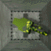
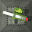
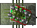

Пока цель недостижима, пулемет находится в хорошо защищенном бункере глубоко под землей. В этом состоянии его невозможно разрушить. При обнаружении цели, пулемет поднимается из люка и открывает огонь. В это время он сильно уязвим.
|  | На железобетонном основании располагается противотанковая тяжелая пушка. Она обладает высокой скорострельностью и хорошим коэффициентом проникновения сквозь броню. Представляет серьезную угрозу для медлительной техники.
|
| здоровье | 600 |
| урон | 5 - 15 |
| разброс | 1,64 |
| скорострельность | 2,5 |
| скорость снаряда | 1400 ± 40 |
| при попадании разворачивает противника | |
|  | Стреляет ракетами класса земля-земля. Установка неплохо бронирована. В паре ракетные установки особенно опасны, так как противнику труднее уклоняться от ракет.
|
| здоровье | 500 |
| урон (в эпицентре) | до 35 - 45 |
| разброс | нет |
| скорострельность | 1,11 |
| скорость снаряда | 750 |
| самонаводящиеся ракеты | |
Пока цель недостижима, пулемет находится в хорошо защищенном бункере глубоко под землей. В этом состоянии его невозможно разрушить. При обнаружении цели, пулемет поднимается из люка и открывает огонь. В это время он сильно уязвим.
|
| здоровье | 250 |
| урон | 4 |
| разброс | 2,86 |
| скорострельность | 25 |
| скорость снаряда | 3000 |
| скрывается в бункере | |
|  | Так же как и стационарный пулемет, эта установка смонтирована в защищенном бункере. Обладает настолько высокой точностью, что увернуться от выстрела практически невозможно. Однако не снабжена инфракрасными датчиками, в результате чего не может атаковать цели за стенами.
|
| здоровье | 200 |
| урон | 60 |
| разброс | нет |
| скорострельность | 5 |
| скорость снаряда | 8000 |
| скрывается в бункере | |
| стреляет из двух стволов | |